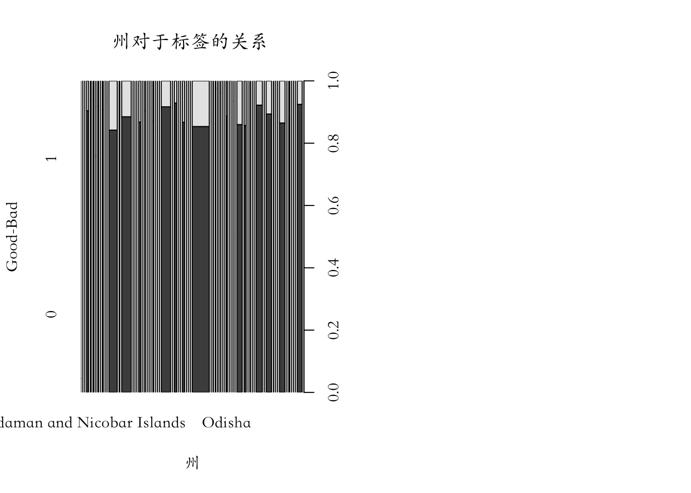
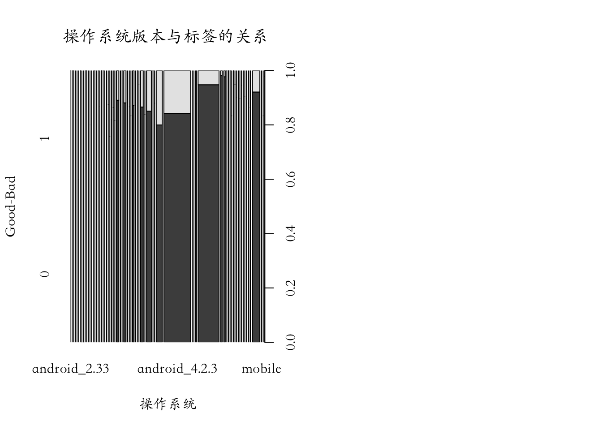
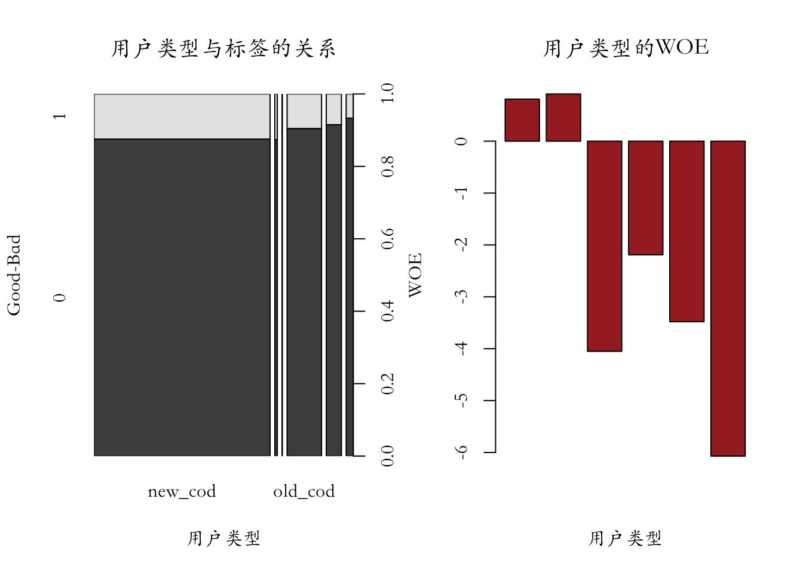

Chapter 3 数据分析
3.0.1 修改数据的类型
Model_data$cod运费 <- as.numeric(Model_data$cod运费)
Model_data$原始来单金额 <- as.numeric(Model_data$原始来单金额)
Model_data$修改后金额 <- as.numeric(Model_data$修改后金额)
Model_data$发货件数 <- as.numeric(Model_data$发货件数)
Model_data$原始来单件数 <- as.numeric(Model_data$原始来单件数)
Model_data$下单小时 <- as.numeric(Model_data$下单小时)
Model_data$付款小时 <- as.numeric(Model_data$付款小时)
Model_data$下单与付款时间间隔 <- as.numeric(Model_data$下单与付款时间间隔)
Model_data$金额差异 <- as.numeric(Model_data$金额差异)
Model_data$件数差异 <- as.numeric(Model_data$件数差异)
Model_data$确认小时 <- as.numeric(Model_data$确认小时)
Model_data$付款到派送 <- as.numeric(Model_data$付款到派送)3.1 查看标签的比例
pct(Model_data$label)| Count | Percentage | |
|---|---|---|
| 0 | 285297 | 88.41 |
| 1 | 37418 | 11.59 |
3.2 单变量分析
WOE(Weight of Evidence):WOE显示了自变量对因变量的预测能力
WOE=ln(Distribution of Non-Events(Good)Distribution of Events(Bad))
其通过更基本的比率计算而来:
(Distribution of Good Credit Outcomes) / (Distribution of Bad Credit Outcomes)
Information Value(IV):
信息值有利于通过变量的重要性进行筛选变量
IV=∑(%Non-Events - %Events)∗WOE
Efficiency:
Efficiency=Abs(%Non-Events - %Events)/2
3.2.1 发货方式
A1 <- gbpct(Model_data$发货方式)
op1<-par(mfrow=c(1,2), new=TRUE)## Warning in par(mfrow = c(1, 2), new = TRUE): 不绘图就不能调用par(new=TRUE)par(family='STKaiti')
plot(as.factor(Model_data$发货方式), Model_data$label,
ylab="Good-Bad", xlab="发货方式",
main="发货方式对标签的影响")
barplot(A1$WOE, col="brown", names.arg=c(A1$Levels),
main="发货方式的WOE",
xlab="发货方式",
ylab="WOE"
)
3.2.2 州
A1 <- gbpct(Model_data$州)
op1<-par(mfrow=c(1,2), new=TRUE)## Warning in par(mfrow = c(1, 2), new = TRUE): 不绘图就不能调用par(new=TRUE)par(family='STKaiti')
plot(as.factor(Model_data$州), Model_data$label,
ylab="Good-Bad", xlab="州",
main="州对于标签的关系 ")
3.2.3 用户性别
A1 <- gbpct(Model_data$用户性别)
op1<-par(mfrow=c(1,2), new=TRUE)## Warning in par(mfrow = c(1, 2), new = TRUE): 不绘图就不能调用par(new=TRUE)par(family='STKaiti')
plot(as.factor(Model_data$用户性别), Model_data$label,
ylab="Good-Bad", xlab="用户性别",
main="用户性别对于标签的关系 ")
barplot(A1$WOE, col="brown", names.arg=c(A1$Levels),
main="用户性别的WOE",
xlab="用户性别",
ylab="WOE"
) ### 用户设备
### 用户设备
A1 <- gbpct(Model_data$用户设备)
op1<-par(mfrow=c(1,2), new=TRUE)## Warning in par(mfrow = c(1, 2), new = TRUE): 不绘图就不能调用par(new=TRUE)par(family='STKaiti')
plot(as.factor(Model_data$用户设备), Model_data$label,
ylab="Good-Bad", xlab="用户设备",
main="用户设别与标签的关系")
barplot(A1$WOE, col="brown", names.arg=c(A1$Levels),
main="用户设备的WOE",
xlab="用户设备",
ylab="WOE"
)
3.2.4 操作系统版本
A1 <- gbpct(Model_data$app1)
op1<-par(mfrow=c(1,2), new=TRUE)## Warning in par(mfrow = c(1, 2), new = TRUE): 不绘图就不能调用par(new=TRUE)par(family='STKaiti')
plot(as.factor(Model_data$app1), Model_data$label,
ylab="Good-Bad", xlab="操作系统",
main="操作系统版本与标签的关系 ")
# barplot(A1$WOE, col="brown", names.arg=c(A1$Levels),
# main="Score:Checking Shipping method Status",
# xlab="Category",
# ylab="WOE"
# )
3.2.5 用户类别
A1 <- gbpct(Model_data$用户类型)
op1<-par(mfrow=c(1,2), new=TRUE)## Warning in par(mfrow = c(1, 2), new = TRUE): 不绘图就不能调用par(new=TRUE)par(family='STKaiti')
plot(as.factor(Model_data$用户类型), Model_data$label,
ylab="Good-Bad", xlab="用户类型",
main="用户类型与标签的关系")
barplot(A1$WOE, col="brown", names.arg=c(A1$Levels),
main="用户类型的WOE",
xlab="用户类型",
ylab="WOE"
)
3.2.6 地址类型
A1 <- gbpct(Model_data$地址种类)
op1<-par(mfrow=c(1,2), new=TRUE)## Warning in par(mfrow = c(1, 2), new = TRUE): 不绘图就不能调用par(new=TRUE)par(family='STKaiti')
plot(as.factor(Model_data$地址种类), Model_data$label,
ylab="Good-Bad", xlab="地址类型",
main="地址类型与标签的关系")
barplot(A1$WOE, col="brown", names.arg=c(A1$Levels),
main="地址类型WOE",
xlab="地址类型",
ylab="WOE"
)
3.2.7 下单时间(小时)
A1 <- gbpct(Model_data$下单小时)
op1<-par(mfrow=c(1,2), new=TRUE)## Warning in par(mfrow = c(1, 2), new = TRUE): 不绘图就不能调用par(new=TRUE)par(family='STKaiti')
plot(as.factor(Model_data$下单小时), Model_data$label,
ylab="Good-Bad", xlab="下单时间(小时)",
main="下单时间(小时)与标签的关系 ")
barplot(A1$WOE, col="brown", names.arg=c(A1$Levels),
main="下单时间(小时)WOE",
xlab="下单时间(小时)",
ylab="WOE"
)
3.2.8 付款时间(小时)
A1 <- gbpct(Model_data$付款小时)
op1<-par(mfrow=c(1,2), new=TRUE)## Warning in par(mfrow = c(1, 2), new = TRUE): 不绘图就不能调用par(new=TRUE)par(family='STKaiti')
plot(as.factor(Model_data$付款小时), Model_data$label,
ylab="Good-Bad", xlab="付款时间(小时)",
main="付款时间(小时)与标签的关系")
barplot(A1$WOE, col="brown", names.arg=c(A1$Levels),
main="付款时间(小时)WOE",
xlab="Category",
ylab="WOE"
)
3.3 计算信息值(Information Value) 和 WOE (Weight of Evidence)
kable(iv)| variable | info_value |
|---|---|
| 地址种类 | 0.4482661 |
| app1 | 0.3126790 |
| 下单与付款时间间隔 | 0.2858385 |
| cod运费 | 0.2818102 |
| 修改后金额 | 0.1986989 |
| 原始来单金额 | 0.1946768 |
| 金额差异 | 0.1632335 |
| 付款到派送 | 0.1379788 |
| 发货方式 | 0.1256872 |
| 用户性别 | 0.1238769 |
| 州 | 0.1158185 |
| 发货件数 | 0.0954921 |
| 原始来单件数 | 0.0929052 |
| 用户类型 | 0.0274259 |
| 确认小时 | 0.0205682 |
| 用户设备 | 0.0140496 |
| 付款小时 | 0.0119562 |
| 下单小时 | 0.0118502 |
| 件数差异 | 0.0073371 |
bins## $发货方式
## variable bin count count_distr good bad
## 1: 发货方式 XpressBees%,%Delhivery 172229 0.5336876 156606 15623
## 2: 发货方式 Ecom 150486 0.4663124 128691 21795
## badprob woe bin_iv total_iv breaks
## 1: 0.09071062 -0.2736100 0.03595137 0.06954223 XpressBees%,%Delhivery
## 2: 0.14483075 0.2556453 0.03359086 0.06954223 Ecom
## is_special_values
## 1: FALSE
## 2: FALSE
##
## $州
## variable
## 1: 州
## 2: 州
## 3: 州
## 4: 州
## bin
## 1: West bengal%,%UTTAR PRADESH%,%madhya pradesh%,%west bengal%,%Uttar pradesh%,%new delhi%,%New Delhi%,%andhra pradesh%,%maharashtra%,%WEST BENGAL%,%uttar pardesh%,%MADHYA PRADESH%,%palakkad%,%Kheda%,%haryana%,%Andhra pradesh%,%Maharashtara%,%Pondicherry%,%RAJSTHAN%,%Tamil nadu%,%Tamilnadu%,%Jammu & Kashmir%,%J&K%,%maharasta%,%Hyderabad%,%daman%,%GUJARAT%,%Haryana,%,%Jharkhan%,%Chattisgarh%,%karnataka%,%kerala%,%West Bangal%,%Meghalaya%,%Mizoram%,%Nagaland%,%Goa%,%Arunachal Pradesh%,%Assam%,%Daman and Diu%,%Puducherry%,%Kerala
## 2: West Bengal%,%Tamil Nadu%,%Chandigarh%,%Karnataka%,%Sikkim%,%Chhattisgarh%,%Himachal Pradesh%,%Andhra Pradesh
## 3: Telangana%,%Manipur%,%Odisha%,%Tripura%,%Gujarat%,%Uttarakhand
## 4: Jammu and Kashmir%,%Haryana%,%Madhya Pradesh%,%Uttar Pradesh%,%Punjab%,%Rajasthan%,%Maharashtra%,%Jharkhand%,%Delhi%,%Bihar%,%punjab%,%Andaman and Nicobar Islands%,%tamil nadu%,%Hariyana
## count count_distr good bad badprob woe bin_iv
## 1: 21778 0.06748369 20513 1265 0.05808614 -0.75460784 0.0287454667
## 2: 87476 0.27106270 80294 7182 0.08210252 -0.38273813 0.0342551910
## 3: 62240 0.19286367 55233 7007 0.11258033 -0.03327208 0.0002107931
## 4: 151221 0.46858993 129257 21964 0.14524438 0.25898095 0.0346850655
## total_iv
## 1: 0.09789652
## 2: 0.09789652
## 3: 0.09789652
## 4: 0.09789652
## breaks
## 1: West bengal%,%UTTAR PRADESH%,%madhya pradesh%,%west bengal%,%Uttar pradesh%,%new delhi%,%New Delhi%,%andhra pradesh%,%maharashtra%,%WEST BENGAL%,%uttar pardesh%,%MADHYA PRADESH%,%palakkad%,%Kheda%,%haryana%,%Andhra pradesh%,%Maharashtara%,%Pondicherry%,%RAJSTHAN%,%Tamil nadu%,%Tamilnadu%,%Jammu & Kashmir%,%J&K%,%maharasta%,%Hyderabad%,%daman%,%GUJARAT%,%Haryana,%,%Jharkhan%,%Chattisgarh%,%karnataka%,%kerala%,%West Bangal%,%Meghalaya%,%Mizoram%,%Nagaland%,%Goa%,%Arunachal Pradesh%,%Assam%,%Daman and Diu%,%Puducherry%,%Kerala
## 2: West Bengal%,%Tamil Nadu%,%Chandigarh%,%Karnataka%,%Sikkim%,%Chhattisgarh%,%Himachal Pradesh%,%Andhra Pradesh
## 3: Telangana%,%Manipur%,%Odisha%,%Tripura%,%Gujarat%,%Uttarakhand
## 4: Jammu and Kashmir%,%Haryana%,%Madhya Pradesh%,%Uttar Pradesh%,%Punjab%,%Rajasthan%,%Maharashtra%,%Jharkhand%,%Delhi%,%Bihar%,%punjab%,%Andaman and Nicobar Islands%,%tamil nadu%,%Hariyana
## is_special_values
## 1: FALSE
## 2: FALSE
## 3: FALSE
## 4: FALSE
##
## $原始来单金额
## variable bin count count_distr good bad badprob
## 1: 原始来单金额 [-Inf,2) 20298 0.06289760 18324 1974 0.09725096
## 2: 原始来单金额 [2,4) 82577 0.25588213 73354 9223 0.11168970
## 3: 原始来单金额 [4,6) 43843 0.13585672 39918 3925 0.08952398
## 4: 原始来单金额 [6,10) 55017 0.17048169 48312 6705 0.12187142
## 5: 原始来单金额 [10,18) 72926 0.22597648 62305 10621 0.14564079
## 6: 原始来单金额 [18,28) 29221 0.09054739 25891 3330 0.11395914
## 7: 原始来单金额 [28, Inf) 18833 0.05835799 17193 1640 0.08708119
## woe bin_iv total_iv breaks is_special_values
## 1: -0.19677086 0.0022574432 0.03578174 2 FALSE
## 2: -0.04221780 0.0004487274 0.03578174 4 FALSE
## 3: -0.28808213 0.0100890135 0.03578174 6 FALSE
## 4: 0.05655241 0.0005571833 0.03578174 10 FALSE
## 5: 0.26217036 0.0171619061 0.03578174 18 FALSE
## 6: -0.01954424 0.0000343283 0.03578174 28 FALSE
## 7: -0.31842721 0.0052331416 0.03578174 Inf FALSE
##
## $修改后金额
## variable bin count count_distr good bad badprob
## 1: 修改后金额 [-Inf,2) 20384 0.06316409 18401 1983 0.09728218
## 2: 修改后金额 [2,4) 83151 0.25766078 73874 9277 0.11156811
## 3: 修改后金额 [4,6) 44200 0.13696295 40226 3974 0.08990950
## 4: 修改后金额 [6,10) 56409 0.17479510 49630 6779 0.12017586
## 5: 修改后金额 [10,18) 73848 0.22883349 63115 10733 0.14533907
## 6: 修改后金额 [18,25) 23496 0.07280728 20784 2712 0.11542390
## 7: 修改后金额 [25, Inf) 21227 0.06577630 19267 1960 0.09233523
## woe bin_iv total_iv breaks is_special_values
## 1: -0.196415291 2.259132e-03 0.03378337 2 FALSE
## 2: -0.043443850 4.782461e-04 0.03378337 4 FALSE
## 3: -0.283361538 9.858532e-03 0.03378337 6 FALSE
## 4: 0.040612980 2.928368e-04 0.03378337 10 FALSE
## 5: 0.259743519 1.704306e-02 0.03378337 18 FALSE
## 6: -0.005118219 1.903526e-06 0.03378337 25 FALSE
## 7: -0.254070444 3.849656e-03 0.03378337 Inf FALSE
##
## $发货件数
## variable bin count count_distr good bad badprob woe
## 1: 发货件数 [-Inf,2) 242394 0.75110856 210330 32064 0.13228050 0.1504351
## 2: 发货件数 [2,3) 30017 0.09301396 27705 2312 0.07702302 -0.4521211
## 3: 发货件数 [3, Inf) 50304 0.15587748 47262 3042 0.06047233 -0.7118125
## bin_iv total_iv breaks is_special_values
## 1: 0.01800438 0.09402303 2 FALSE
## 2: 0.01596932 0.09402303 3 FALSE
## 3: 0.06004934 0.09402303 Inf FALSE
##
## $原始来单件数
## variable bin count count_distr good bad badprob
## 1: 原始来单件数 [-Inf,2) 239614 0.74249415 207870 31744 0.13247974
## 2: 原始来单件数 [2,3) 29493 0.09139024 27176 2317 0.07856101
## 3: 原始来单件数 [3, Inf) 53608 0.16611561 50251 3357 0.06262125
## woe bin_iv total_iv breaks is_special_values
## 1: 0.1521697 0.01822272 0.09087764 2 FALSE
## 2: -0.4306821 0.01435595 0.09087764 3 FALSE
## 3: -0.6746039 0.05829897 0.09087764 Inf FALSE
##
## $cod运费
## variable bin count count_distr good bad badprob
## 1: cod运费 [-Inf,1.5) 143652 0.4451358 129995 13657 0.09507003
## 2: cod运费 [1.5, Inf) 179063 0.5548642 155302 23761 0.13269631
## woe bin_iv total_iv breaks is_special_values
## 1: -0.2218649 0.02011498 0.03408191 1.5 FALSE
## 2: 0.1540528 0.01396692 0.03408191 Inf FALSE
##
## $用户性别
## variable bin count count_distr good bad badprob
## 1: 用户性别 missing 1972 0.006110655 1694 278 0.14097363
## 2: 用户性别 not set%,%women 228872 0.709207815 207855 21017 0.09182862
## 3: 用户性别 men 91871 0.284681530 75748 16123 0.17549608
## woe bin_iv total_iv breaks is_special_values
## 1: 0.2241521 0.0003344142 0.1238244 missing TRUE
## 2: -0.2601302 0.0434092333 0.1238244 not set%,%women FALSE
## 3: 0.4842137 0.0800807579 0.1238244 men FALSE
##
## $用户设备
## variable bin count count_distr good bad badprob
## 1: 用户设备 missing 2467 0.007644516 2109 358 0.14511552
## 2: 用户设备 pc%,%mobile%,%ios 35046 0.108597369 32068 2978 0.08497403
## 3: 用户设备 android 285202 0.883758115 251120 34082 0.11950127
## woe bin_iv total_iv breaks is_special_values
## 1: 0.25794268 0.0005611005 0.01293809 missing TRUE
## 2: -0.34522784 0.0113285823 0.01293809 pc%,%mobile%,%ios FALSE
## 3: 0.03421734 0.0010484026 0.01293809 android FALSE
##
## $app1
## variable
## 1: app1
## 2: app1
## 3: app1
## 4: app1
## bin
## 1: missing
## 2: android_2.45%,%android_3.7.1%,%android_2.49%,%android_3.3.3%,%android_4.2.0%,%android_2.34%,%android_2.48%,%android_2.33%,%android_4.0.1%,%iOS_1.6.1%,%iOS_1.5.9%,%android_3.2.0%,%iOS_1.5.8%,%android_2.38%,%android_3.3.0%,%android_3.4.0%,%android_null%,%android_4.3.4%,%pc%,%android_4.3.5%,%iOS_1.6.2%,%android_4.0.2%,%android_4.3.3%,%iOS_1.9.1%,%iOS_2.0.0
## 3: iOS_1.8.0%,%iOS_4.2.0
## 4: iOS_2.0.1%,%android_4.3.0%,%iOS_1.7.0%,%iOS_2.1.0%,%iOS_1.9.0%,%android_3.6.2%,%android_3.7.3%,%android_4.2.1%,%iOS_4.0.0%,%android_4.3.2%,%android_3.8.0%,%android_3.4.3%,%android_3.2.1%,%android_3.9.1%,%android_3.3.1%,%android_3.8.1%,%android_4.0.3%,%android_3.1.1%,%android_3.5.5%,%iOS_4.1.0%,%android_3.4.2%,%android_3.4.1%,%android_4.1.1%,%android_4.2.3%,%android_4.1.0%,%android_3.9.0%,%mobile-pwa%,%iOS_1.6.0%,%mobile%,%android_3.0.2%,%android_3.5.2%,%android_2.42%,%android_3.6.1%,%android_3.0.1%,%android_4.2.2%,%android_3.7.0%,%android_4.0.0%,%android_3.5.1%,%android_4.3.1%,%android_2.44%,%android_2.50%,%android_2.40%,%android_2.46%,%android_2.47
## count count_distr good bad badprob woe bin_iv
## 1: 2467 0.007644516 2109 358 0.14511552 0.2579427 0.0005611005
## 2: 95468 0.295827588 90854 4614 0.04833033 -0.9487798 0.1851491250
## 3: 29467 0.091309670 27136 2331 0.07910544 -0.4231850 0.0138883801
## 4: 195313 0.605218227 165198 30115 0.15418841 0.3292575 0.0743423496
## total_iv
## 1: 0.273941
## 2: 0.273941
## 3: 0.273941
## 4: 0.273941
## breaks
## 1: missing
## 2: android_2.45%,%android_3.7.1%,%android_2.49%,%android_3.3.3%,%android_4.2.0%,%android_2.34%,%android_2.48%,%android_2.33%,%android_4.0.1%,%iOS_1.6.1%,%iOS_1.5.9%,%android_3.2.0%,%iOS_1.5.8%,%android_2.38%,%android_3.3.0%,%android_3.4.0%,%android_null%,%android_4.3.4%,%pc%,%android_4.3.5%,%iOS_1.6.2%,%android_4.0.2%,%android_4.3.3%,%iOS_1.9.1%,%iOS_2.0.0
## 3: iOS_1.8.0%,%iOS_4.2.0
## 4: iOS_2.0.1%,%android_4.3.0%,%iOS_1.7.0%,%iOS_2.1.0%,%iOS_1.9.0%,%android_3.6.2%,%android_3.7.3%,%android_4.2.1%,%iOS_4.0.0%,%android_4.3.2%,%android_3.8.0%,%android_3.4.3%,%android_3.2.1%,%android_3.9.1%,%android_3.3.1%,%android_3.8.1%,%android_4.0.3%,%android_3.1.1%,%android_3.5.5%,%iOS_4.1.0%,%android_3.4.2%,%android_3.4.1%,%android_4.1.1%,%android_4.2.3%,%android_4.1.0%,%android_3.9.0%,%mobile-pwa%,%iOS_1.6.0%,%mobile%,%android_3.0.2%,%android_3.5.2%,%android_2.42%,%android_3.6.1%,%android_3.0.1%,%android_4.2.2%,%android_3.7.0%,%android_4.0.0%,%android_3.5.1%,%android_4.3.1%,%android_2.44%,%android_2.50%,%android_2.40%,%android_2.46%,%android_2.47
## is_special_values
## 1: TRUE
## 2: FALSE
## 3: FALSE
## 4: FALSE
##
## $用户类型
## variable
## 1: 用户类型
## 2: 用户类型
## 3: 用户类型
## bin count
## 1: old_prepaid_old_cod%,%old_prepaid_new_cod%,%new_prepaid_old_cod 31057
## 2: old_cod 47207
## 3: new_cod%,%new_prepaid_new_cod 244451
## count_distr good bad badprob woe bin_iv total_iv
## 1: 0.09623662 28600 2457 0.0791126 -0.42308675 0.014631535 0.02626036
## 2: 0.14628077 42704 4503 0.0953884 -0.21816988 0.006400987 0.02626036
## 3: 0.75748261 213993 30458 0.1245976 0.08178425 0.005227836 0.02626036
## breaks
## 1: old_prepaid_old_cod%,%old_prepaid_new_cod%,%new_prepaid_old_cod
## 2: old_cod
## 3: new_cod%,%new_prepaid_new_cod
## is_special_values
## 1: FALSE
## 2: FALSE
## 3: FALSE
##
## $地址种类
## variable bin count
## 1: 地址种类 missing 32963
## 2: 地址种类 Valid Address 211036
## 3: 地址种类 Missing Rooftop with POI 27599
## 4: 地址种类 Missing Rooftop%,%Inappropriate%,%Incomplete%,%Junk 51117
## count_distr good bad badprob woe bin_iv total_iv
## 1: 0.10214276 32836 127 0.003852805 -3.52371480 3.935990e-01 0.4450414
## 2: 0.65393923 186341 24695 0.117017950 0.01040134 7.103135e-05 0.4450414
## 3: 0.08552128 24204 3395 0.123011703 0.06716472 3.958573e-04 0.4450414
## 4: 0.15839673 41916 9201 0.179998826 0.51502343 5.097554e-02 0.4450414
## breaks is_special_values
## 1: missing TRUE
## 2: Valid Address FALSE
## 3: Missing Rooftop with POI FALSE
## 4: Missing Rooftop%,%Inappropriate%,%Incomplete%,%Junk FALSE
##
## $下单小时
## variable bin count count_distr good bad badprob
## 1: 下单小时 [-Inf,5) 37569 0.11641541 32658 4911 0.1307195
## 2: 下单小时 [5,17) 231021 0.71586694 205342 25679 0.1111544
## 3: 下单小时 [17,19) 34948 0.10829370 30943 4005 0.1145988
## 4: 下单小时 [19, Inf) 19177 0.05942395 16354 2823 0.1472076
## woe bin_iv total_iv breaks is_special_values
## 1: 0.13676661 0.0022945074 0.008885842 5 FALSE
## 2: -0.04762447 0.0015941915 0.008885842 17 FALSE
## 3: -0.01322435 0.0000188428 0.008885842 19 FALSE
## 4: 0.27470650 0.0049783008 0.008885842 Inf FALSE
##
## $付款小时
## variable bin count count_distr good bad badprob
## 1: 付款小时 [-Inf,5) 37095 0.11494662 32224 4871 0.1313115
## 2: 付款小时 [5,17) 230946 0.71563454 205269 25677 0.1111818
## 3: 付款小时 [17,19) 35187 0.10903429 31172 4015 0.1141046
## 4: 付款小时 [19, Inf) 19487 0.06038455 16632 2855 0.1465079
## woe bin_iv total_iv breaks is_special_values
## 1: 0.14196661 2.445947e-03 0.008901763 5 FALSE
## 2: -0.04734679 1.575312e-03 0.008901763 17 FALSE
## 3: -0.01810404 3.548894e-05 0.008901763 19 FALSE
## 4: 0.26912216 4.845015e-03 0.008901763 Inf FALSE
##
## $下单与付款时间间隔
## variable bin count count_distr good bad
## 1: 下单与付款时间间隔 [-Inf,-0.083) 38240 0.1184946 33125 5115
## 2: 下单与付款时间间隔 [-0.083,-0.0814) 137899 0.4273089 120792 17107
## 3: 下单与付款时间间隔 [-0.0814,-0.0774) 106184 0.3290334 94815 11369
## 4: 下单与付款时间间隔 [-0.0774, Inf) 40392 0.1251631 36565 3827
## badprob woe bin_iv total_iv breaks is_special_values
## 1: 0.13376046 0.16326799 0.003361988 0.01435376 -0.083 FALSE
## 2: 0.12405456 0.07679655 0.002595418 0.01435376 -0.0814 FALSE
## 3: 0.10706886 -0.08965840 0.002555278 0.01435376 -0.0774 FALSE
## 4: 0.09474648 -0.22563142 0.005841080 0.01435376 Inf FALSE
##
## $金额差异
## variable bin count count_distr good bad badprob woe
## 1: 金额差异 [-Inf, Inf) 322715 1 285297 37418 0.1159475 0
## bin_iv total_iv breaks is_special_values
## 1: 0 0 Inf FALSE
##
## $件数差异
## variable bin count count_distr good bad badprob woe
## 1: 件数差异 [-Inf, Inf) 322715 1 285297 37418 0.1159475 0
## bin_iv total_iv breaks is_special_values
## 1: 0 0 Inf FALSE
##
## $确认小时
## variable bin count count_distr good bad badprob
## 1: 确认小时 [-Inf,5) 20463 0.06340889 18528 1935 0.09456091
## 2: 确认小时 [5,12) 220152 0.68218707 193376 26776 0.12162506
## 3: 确认小时 [12,13) 29449 0.09125389 26112 3337 0.11331454
## 4: 确认小时 [13, Inf) 52651 0.16315015 47281 5370 0.10199236
## woe bin_iv total_iv breaks is_special_values
## 1: -0.22779690 3.013701e-03 0.00832062 5 FALSE
## 2: 0.05424835 2.049801e-03 0.00832062 12 FALSE
## 3: -0.02594391 6.081242e-05 0.00832062 13 FALSE
## 4: -0.14390174 3.196306e-03 0.00832062 Inf FALSE
##
## $付款到派送
## variable bin count count_distr good bad badprob
## 1: 付款到派送 missing 3441 0.01066266 1327 2114 0.61435629
## 2: 付款到派送 [-Inf,0.2) 190833 0.59133601 168293 22540 0.11811374
## 3: 付款到派送 [0.2,1) 81786 0.25343105 73034 8752 0.10701098
## 4: 付款到派送 [1,1.4) 20867 0.06466077 18904 1963 0.09407198
## 5: 付款到派送 [1.4, Inf) 25788 0.07990952 23739 2049 0.07945556
## woe bin_iv total_iv breaks is_special_values
## 1: 2.49704000 0.1294604871 0.1468417 missing TRUE
## 2: 0.02096387 0.0002619823 0.1468417 0.2 FALSE
## 3: -0.09026397 0.0019943602 0.1468417 1 FALSE
## 4: -0.23352075 0.0032224443 0.1468417 1.4 FALSE
## 5: -0.41838853 0.0119024356 0.1468417 Inf FALSE- 下面这些变量是没有预测能力或者预测能力非常弱的一些变量 (IV< 2%), 因此可以直接将这些变量筛选掉
library(tidyverse)
kable(iv %>% filter(info_value<0.02))## Warning: package 'bindrcpp' was built under R version 3.4.4| variable | info_value |
|---|---|
| 用户设备 | 0.0140496 |
| 付款小时 | 0.0119562 |
| 下单小时 | 0.0118502 |
| 件数差异 | 0.0073371 |
- 下面这一部分变量只是有非常弱的预测变量 (2%<=IV< 10%), 因此可以考虑加上这一部分变量，也可以不加上这些变量
library(tidyverse)
kable(iv %>% filter(info_value>=0.02,info_value<0.1))| variable | info_value |
|---|---|
| 发货件数 | 0.0954921 |
| 原始来单件数 | 0.0929052 |
| 用户类型 | 0.0274259 |
| 确认小时 | 0.0205682 |
- 这些变量有一定的预测能力 (10%<=IV< 30%), 可以考虑选取其中一些变量加入到模型里面去
library(tidyverse)
kable(iv %>% filter(info_value>=0.1,info_value<0.3))| variable | info_value |
|---|---|
| 下单与付款时间间隔 | 0.2858385 |
| cod运费 | 0.2818102 |
| 修改后金额 | 0.1986989 |
| 原始来单金额 | 0.1946768 |
| 金额差异 | 0.1632335 |
| 付款到派送 | 0.1379788 |
| 发货方式 | 0.1256872 |
| 用户性别 | 0.1238769 |
| 州 | 0.1158185 |
- 这些变量有比较强的预测能力 (IV 30% to 50%),模型选取这一部分变量进行建模
library(tidyverse)
kable(iv %>% filter(info_value>=0.3,info_value<0.5))| variable | info_value |
|---|---|
| 地址种类 | 0.4482661 |
| app1 | 0.3126790 |
选取进行建模的变量
var_list_1 <- iv %>% filter(info_value>0.1) %>% select(variable) # 15 variables
Model_data1 <- Model_data %>% select(var_list_1$variable,label) #12 variables
head(Model_data1)## 地址种类 app1 下单与付款时间间隔 cod运费 修改后金额
## 1: Valid Address iOS_4.1.0 19.45732 1.55 5.60
## 2: Valid Address android_4.1.1 16.93115 1.55 6.92
## 3: Missing Rooftop android_4.2.2 17.41311 1.55 10.32
## 4: Valid Address android_4.0.3 16.85653 1.55 4.67
## 5: Missing Rooftop android_4.1.1 19.56840 1.55 10.26
## 6: Valid Address iOS_4.1.0 16.91516 1.55 16.02
## 原始来单金额 金额差异 付款到派送 发货方式 用户性别 州 label
## 1: 5.60 0 2.7096488 Delhivery women Telangana 0
## 2: 6.92 0 -0.4770722 Delhivery women Telangana 0
## 3: 10.32 0 -0.1513002 Ecom men Maharashtra 0
## 4: 4.67 0 -0.1274765 Ecom women Maharashtra 0
## 5: 10.26 0 -0.1704649 Delhivery men Karnataka 0
## 6: 16.02 0 0.2219836 Delhivery women Karnataka 0